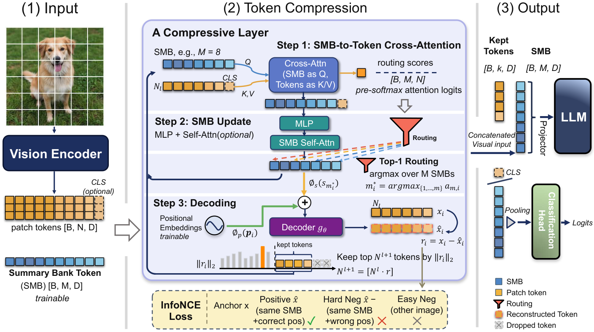

Paper Analysis
01 · Importance Depends on What Is Already Retained
独立给每个 token 打分，容易留下多个相似的高分区域，却丢掉一个小而独特的细节。ReConV 的出发点是相对冗余：一个 token 是否值得保留，取决于当前摘要已经能表达多少它的信息，而不只取决于其独立显著性。
输入是 N 个 D 维视觉特征，另有 M 个可学习 Summary Bank（SMB）向量，M 远小于 N。输出由更新后的摘要和少量保留 token 组成。分类用 CLS 或摘要池化，多模态任务把摘要及保留特征投影后送入 LLM。
这里“语义压缩”不等于使用对象类别、分割标签或 VLM 生成描述。分类模型在任务与重建监督下出现区域分组；多模态版本的输入来自冻结 CLIP 编码器。论文没有施加独立的区域语言对齐监督，也没有保证一个 SMB 对应一个物体。
Paper Analysis
02 · Reading the Original Architecture

Xiaoya Tang, Shilong Liu, Daniel Smolyak, Xiwen Li, Quynh Nguyen, and Tolga Tasdizen · CC BY 4.0 · Original figure, unmodified · Paper & Caption ↗
图 2 Step 1 用 SMB 作 Query、图像 token 作 Key/Value，经非对称 cross-attention 将视觉信息汇入摘要。残差连接、MLP 与可选 SMB self-attention 继续更新摘要。图中的 CLS 是可选项；正文说明它不参与 SMB 到视觉 token 的 cross-attention 或逐 token 重建。
Step 2 复用跨头平均的 pre-softmax logits，为每个视觉 token 选择得分最高的摘要槽位。这里确实使用注意力 logits 来分配槽位；方法不依赖指定层/头的显著性来决定丢弃，不等于整个系统不使用注意力。
Step 3 将选中摘要与该 token 的位置 embedding 投影、组合，交给两层 MLP decoder，重建输入特征。只需要一个槽位和位置，就能对该位置产生预测；同一槽位可在多个位置表达不同特征。原位置索引在压缩层之间传递，不能在裁剪后把序号当作原图坐标。
最后保留重建残差大的 token，与 SMB 一起送到下一压缩层或下游任务。共享内容留在摘要，未充分表示的局部内容保留在显式 token 中。图中用直接相减示意 residual，并画出组合符号；具体 InfoNCE 分支应以正文式 (3) 的投影后拼接和式 (4) 的正交残差为准。
S_tilde = S + MHA(LN(S), LN(V), LN(V)) S_new = Refine(S_tilde) m_i = argmax_m mean_head(attention_logits[m,i]) v_hat_i = decoder(concat(phi_s(S_new[m_i]), phi_p(position_i))) Output = Summary Bank + selected token representations
Paper Analysis
03 · What the Residual Measures
InfoNCE 配置把重建向量归一化为 u_i，再从原向量 v_i 中减去沿 u_i 的投影。按剩余向量的 L2 范数取 top-k。它衡量方向上尚未被重建解释的分量，不是简单的 ||v_i−v_hat_i||。
教学算例：v=(2,1)，重建方向 u=(1,0)，则 r=(0,1)，残差范数为 1。若另一个 token 为 (2,0)，其残差为零，无论重建向量的长度是 1 还是 10。因此该选择对重建幅值误差不敏感，但还受原 token 范数影响。
由公式可直接推得 ||r||²=||v||²−(v·u)²。平行和反平行方向都得到零残差；InfoNCE 正样本训练会倾向正向对齐，但残差分数本身不能区分这两种情况。这是数学上的适用边界，不是论文测得的失败率。
高残差也可能来自噪声、纹理或尚未学好的 decoder，低残差则不保证对所有后续问题都可丢弃。作者用下游任务结果检验这一代理；不能仅看残差图就宣称保留了几何最有价值的信息。
总预算必须包括摘要。每层按 keep ratio ρ 缩短当前非摘要 token，最终近似为 M+N∏ρ。正文的零保留率示例表示只剩 SMB，但附录伪代码又写 k=max(1,round(Nρ))；零 token 分支的实际实现需等待可核实代码澄清。
u_i = v_hat_i / ||v_hat_i||_2 r_i = v_i − (v_i^T u_i) u_i score_i = ||r_i||_2 keep = TopK(score, round(N_current * rho)) Total output budget ≈ M + N * product_l(rho_l)
Paper Analysis
04 · Reconstruction Loss and the Learning Signal
InfoNCE 的正样本是原 token 与同位置的重建特征；难负样本来自同图、同 SMB 但错误位置的重建，容易负样本来自其他图像。它迫使摘要与位置联合恢复 token 特异的信息，而不是让一个槽位只输出完全相同的原型。候选监督位置可以是已丢弃集合或全部集合，再按预算采样。
重建损失经过 decoder 回到被选中的摘要内容，并经过 SMB cross-attention 回到聚合参数。argmax 槽位指派和 top-k 索引是离散操作，论文没有给出让索引本身连续可微的机制；不能笼统说未来任务梯度直接优化了每一次硬选择。
保留原特征时，下游任务可通过保留特征及摘要路径训练；保留 residual 时，r 本身还依赖重建方向，因此下游梯度有额外的 decoder 路径。是否对原特征作为重建目标执行 detach，应以代码配置为准，本文可访问材料不足以确认所有训练分支。
分类总 loss 为分类/可选蒸馏项加 0.05 倍重建项；蒸馏时交叉熵与教师 KL 各占 0.5。多模态版本把两个压缩层插在冻结 CLIP-ViT-L-336 与 projector 之间，预训练使用 558K 对齐数据、重建权重 0.01；指令阶段用 665K 数据，冻结 projector，以 LoRA 更新 LLM，重建权重降为 0.001。
推理仍要运行 decoder 才能得到选择分数，但不计算训练用对比损失。同一图像的压缩不依赖文本问题，因此多轮可复用；这是一张图的跨问答复用，不是不断到达新帧时的时序记忆更新。
L_rec = −mean_i log [ exp(cos(v_i, v_hat_i)/tau)
/ (exp(cos(v_i, v_hat_i)/tau)
+ sum_j exp(cos(v_i, v_hat_j)/tau)) ]
Hard negatives: same image and SMB, different positions.
Easy negatives: other images.
L = L_task + lambda * L_recPaper Analysis
05 · Classification Results Need Their Baseline Context
主表以 DeiT-S 4.61 GMACs、79.8% Top-1 为参照，报告 2.88 GMACs/80.40% 和 2.42 GMACs/79.90%。因此“48% 计算减少且保持精度”是相对主表 79.8 的结论。
附录自行训练的无蒸馏 Vanilla 则是 80.61%，对应 2.42 GMACs 的 Comp-F 为 79.90%，低 0.71 点；强教师 RegNet-Y-160 基线为 81.88%，对应压缩模型 80.06%。而 vanilla 训练 300 epochs、压缩模型 500 epochs。应把它读成计算—准确率折中，不能说严格匹配训练条件下免费提升。
消融更能解释组件作用：默认 79.92，移除 decoder 为 75.95；保留 decoder 与重建 loss、仅随机丢 token 为 79.21。前者同时改变重建与相关流程，后者更接近选择策略对照，显示残差排序带来的增益约 0.71 点。
位置输入带来一个有意思的反例：去掉 decoder 位置后分类几乎不变，79.92 到 79.91，但三层特征重建 R² 从约 0.48/0.48/0.58 降到 0.27/0.27/0.32。重建得更好与分类更好不是同一件事，也提醒我们将语义重建 loss 用于几何时需要任务层验证。
可视化中槽位分组具有区域连贯性，但跨 ImageNet 类别的槽位标签分布熵接近均匀；更像类别无关的中层结构聚合，不能把它当成无需监督就获得可靠实例分割的证据。
| Classification Comparison | GMACs ↓ | Top-1 (%) ↑ | Interpretation |
|---|---|---|---|
| Main-table DeiT-S | 4.61 | 79.80 | 主表比较基线 |
| ReConV, aggressive | 2.42 | 79.90 | 相对主表近似保持 |
| Appendix trained Vanilla | 4.61 | 80.61 | 更强的自行训练参照 |
| Default ablation | — | 79.92 | 重建与残差选择 |
| No decoder | — | 75.95 | 组件联合变化 |
| Random dropping | — | 79.21 | 保留重建的选择对照 |
Paper Analysis
06 · Multimodal Evidence and the Cost of Compression
多轮评估中，MT-VQA-v2 把每张图的 3–14 个问题当作独立查询；ConvBench 才包含原生跨轮依赖。两者不能共同简化为长期视频理解。报告的约 95% token 减少下，MT-VQA-v2 从未压缩 79.99 到 70.93，约保留 88.7% 相对成绩，但绝对下降 9.06 个百分点。
随机压缩为 69.76，PruMerge+ 为 67.97，ReConV 相对这些压缩对照有所改善。摊销图像编码的延迟为 115.36 ms/问题，未压缩为 314.50，即 2.73 倍；随机压缩为 114.91 ms，速度几乎一样。主要意义是相近压缩成本下的质量差别，不是残差机制本身必然更快。
ConvBench 使用同一 Qwen3-VL-8B-Instruct judge，未压缩均分 4.16，ReConV 3.70，PruMerge+ 3.66。总 prefill 均值从 361.05 s 到 239.81 s，约 1.51 倍。这是论文定义的 prefill 统计，不能解释成完整逐问题生成时间。
固定 64 token 预算时，32 个保留特征+32 个 SMB 的 MME-P 为 1327，改为 56+8 达到 1404，MME-C 均为 321。摘要并非越多越好；对于细粒度多模态理解，显式细节可能比继续扩大摘要更重要。
127-token 消融里，加入位置重新注入，MME-P 从 1337 到 1457；这与分类的位置消融结论不同。任务需要不同信息，不能把分类上可丢弃的细节默认也从几何 memory 中删除。
| MT-VQA-v2 Method | Overall (%) ↑ | Amortized Latency (ms/q) ↓ |
|---|---|---|
| Uncompressed | 79.99 | 314.50 |
| Random pruning | 69.76 | 114.91 |
| PruMerge+ | 67.97 | 117.17 |
| ReConV | 70.93 | 115.36 |
Paper Analysis
07 · From Token Reconstruction to Streaming Memory
对我们最直接的启发是给 memory 的信息保留提出可检查的问题：压缩后的状态能否恢复当前区域需要的表征，哪些信息始终无法被摘要覆盖？这比只说“memory 中加入语义”更具体，但 ReConV 的答案目前只验证于分类与多模态理解。
如果做 LingBot-Map 的诊断实验，可固定 memory token 数，在写入后用区域位置和当前可用查询读取历史状态，尝试预测冻结教师的像素对齐特征；同时跟踪未来帧几何误差。这里是待检验的迁移设计，不是 ReConV 已有的时序 loss，也不能把过去帧特征偷偷作为 decoder 输入。
需要警惕两个捷径：位置编码可能学到固定图像布局，而非真的读到历史内容；语义特征容易重建，也可能恰好忽略细结构和跨视角对应。可用空/错配 memory 诊断读取依赖，并以相同容量下的未来几何结果作为最终标准。
若照搬“摘要+额外残差 token”，就已经改变存储预算；必须从同一总预算内分配，不能一边增加 token 一边将收益归给语义。写入前语义融合、特征重建辅助监督和残差保留是三个可分开检验的变化。
论文 TokenDrop 链接实际指向不完整的 https://TokenDrop，本次未找到可验证的作者代码入口。零保留率分支、目标 detach 和计时范围等实现细节仍需正式代码确认；正文只报告论文结果与公式分析。
Discussion
Reading Questions
Does ReConV use semantic segmentation labels?
没有。语义连贯分组是表征压缩中观察到的现象；没有实例分割监督或稳定对象身份保证。
Why retain high-residual tokens?
它们的特征方向较少被摘要重建解释，可为摘要补充信息；但高残差也可能是噪声，因此必须用下游效果验证。
Is the selection score an ordinary reconstruction error?
InfoNCE 配置用正交残差范数，忽略重建幅值且对正反方向对称；直接 L2 相减是另一分支，不能混用解释。
Would a lower memory reconstruction loss prove better geometry?
不会。分类中 R² 明显改善但准确率几乎不变已经说明两者不等价；流式重建还需未来几何损失和固定容量对照。
References
- Original Paper ↗
- Submission and Version History ↗
- Related Note: Semantic Memory Supervision ↗
- Related Note: Velox ↗
One original method figure is included for scholarly analysis under CC BY 4.0. Paper results are author-reported; no local reproduction has been performed. First-submission dates and reading versions are recorded separately.
Verified on 2026-11-03. Paper results refer to the linked versions. Repository references were checked on this date.